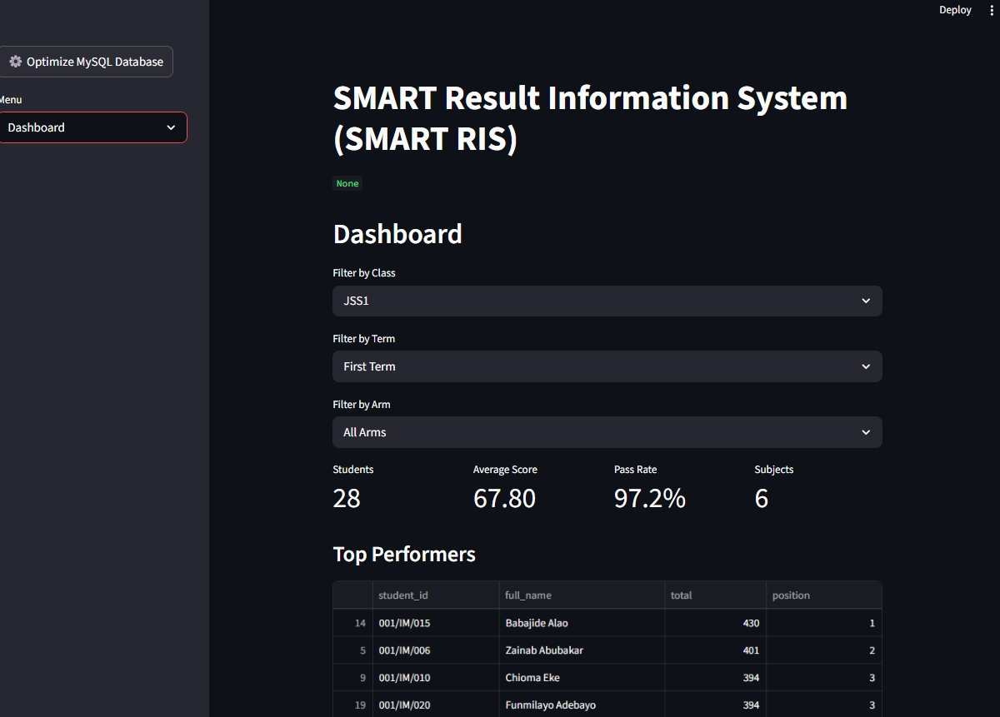
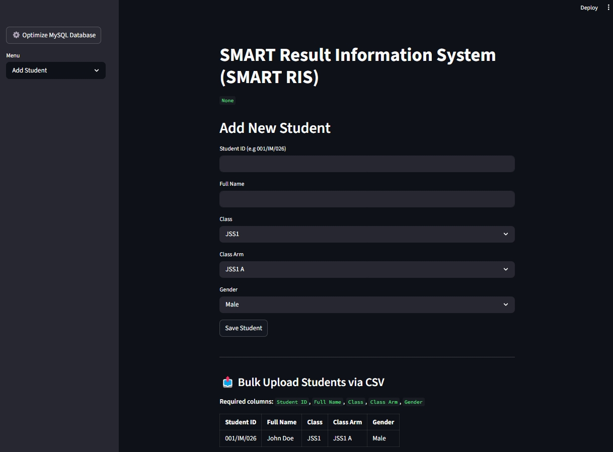
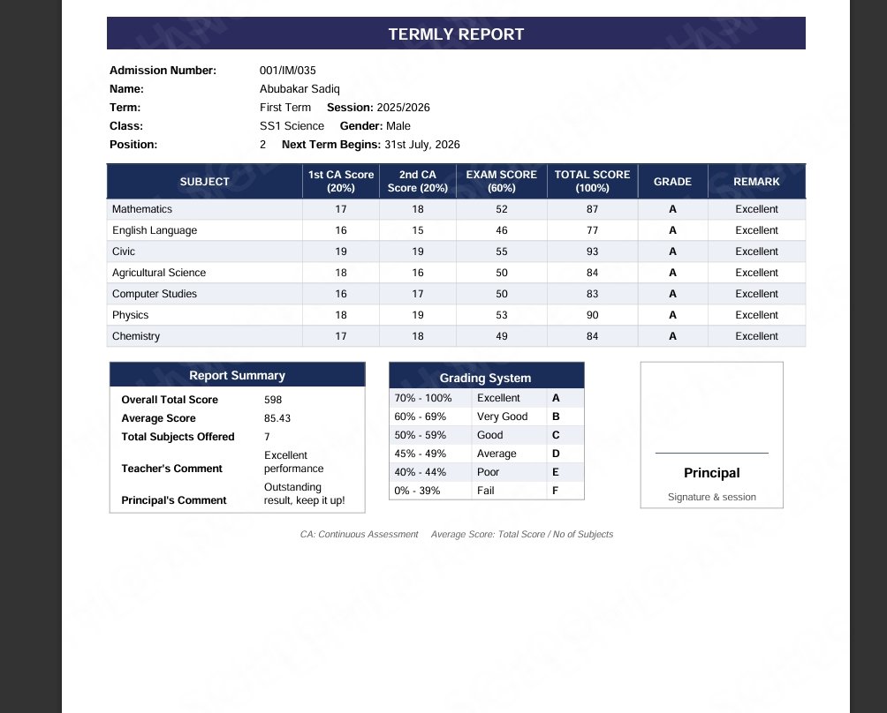

A database-driven platform that automates student result processing, academic analytics, ranking computation and professional report card generation for schools.

SmartRIS was developed to solve a common challenge faced by many schools: managing academic records through disconnected spreadsheets and manual workflows. Traditional Excel-based systems often become difficult to maintain as data grows. SmartRIS replaces this fragmented process with a centralized database-driven platform that automates result processing, ranking computation, analytics generation, and professional PDF report card production. The system is currently being expanded with an online student-access portal.
Administrative dashboard displaying academic analytics, class performance metrics, rankings and reporting tools.

Student registration interface supporting both manual entry and bulk CSV imports.

Professionally formatted PDF report cards generated automatically from database records.
Centralized MySQL architecture replacing spreadsheet workflows.
Performance calculations and rankings generated automatically.
CSV onboarding for large student populations.
Automated ReportLab report generation.
Prepared for cloud deployment and online access.
☑ Database Migration
☑ Automated PDF Generation
☑ Academic Analytics Dashboard
☑ Bulk CSV Upload System
☐ Student Online Portal
☐ Parent Access Portal
☐ Role-Based Access Control
☐ Cloud Deployment
☐ Online Result Checking
I served as the sole developer throughout the project lifecycle. Responsibilities included system architecture design, database design, backend development, Streamlit interface development, CSV upload pipeline implementation, analytics and ranking logic, PDF report generation, testing and deployment.
Let's discuss how automation, analytics and database systems can improve your workflow.
Contact Me